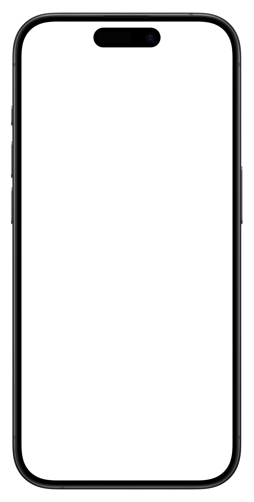

3 SEÑALES
de que tu web ya
NO sirve
3 SEÑALES
de que tu web ya
NO sirve
3 SEÑALES
de que tu web ya
NO sirve
Señal #1
0.0s
Carga en más de
3 segundos
Señal #2

<table width="800" border="1">
<tr><td><font size="1">
BIENVENIDOS
</font></td></tr>
<marquee>Contacto</div>
<img src="x"></img>
<br><br><br>
No se ve bien
en móvil
NO TE
ENCUENTRAN
EN GOOGLE
Transformamos tu visión en código vivo